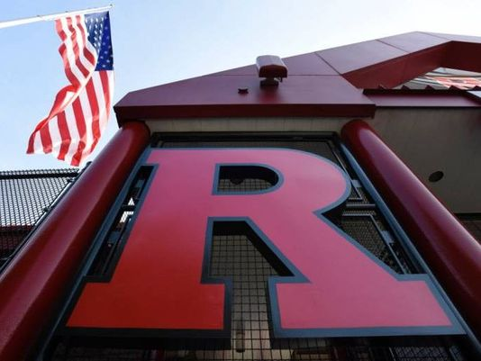
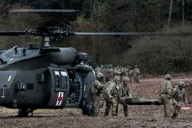

My Career Paths
I have taken a few career paths in life which have all lead me to my current path of becoming a Web Developer.
Culinary Arts
My journey started in high school when I thought I wanted to become a chef. So I decided to attended Camden County Vocational High School and major in culinary arts. I enjoyed cooking and still do to this day, but I knew I would not be happy doing this for the rest of my life. I always liked Math and Science and I would spend my spare time reading books about human anatomy and physiology. The complexities of the human body and it’s working fascinated me at that time. So around my 11th-grade year, I decided to pursue a career as a physician.
Pre-Med Student
I applied to Rutgers University and was accepted as a pre-med student majoring in biology. I spent countless hours studying and finally graduated with a Bachelors in Biology. I applied to several different medical schools but was not able to get in. I was accepted into New York School of Podiatric Medicine but I was so determined to become a medical doctor that I passed on this opportunity.
Army Medical Specialist
I tried for a year to get into medical school but was unable to. During this time I was working as a clinical associate for a company named Bancroft. My main responsibility was to look after special needs kids with behavioral issues. I enjoyed the job but there were few opportunities for advancement. Also, I never gave up my passion of becoming a physician. I needed some real hands-on medical experience before I could even attempt to apply to medical school again. This is when I decided to enlist in the Army to become a medical specialist. My grandfather, father, and uncles have all served in the military, so my thought was why not kill two birds with one stone. I can continue the family tradition of serving my country, while at the same time gaining some hands-on experience to better improve my chances of getting into medical school.
While serving in the Army I was able to work at various medical facilities and I grained a lot of first-hand exposure to what it was like working in the medical field. This is where I became interested in nursing. Nurses in the hospitals work side by side with physicians in addition too various other medical personnel. So my thinking was if I become a nurse it would make me a better candidate for medical school, then just being a medic alone.
Critcal Care and Dialysis Nurse
After being discharged from the Army I apply to nursing school at my alumina Rutgers University. I already had my Bachelors in Biology, so it only took me 2 years to complete my second degree, a Bachelors of Nursing
My first job out of nursing school was a Cardiac Intensive Care Nurse which I spent two years working in the Critical Care Unit. I was so excited to be where "the action was", that somewhere along the way I gave up my goal of becoming a physician and decided to apply to Nurse Anesthetist. I applied and was accepted into Drexel University's Nurse Anesthesia program but after 6 months I decided that this was not where I wanted to be. After withdrawing from school I got a job as a Dialysis Nurse working for DaVita, where I am currently working.
Future Web Developer

This brings me to my current career change decision. I have been a Nurse for over 13 years and somewhere along the way, I lost my passion for it. One day while searching on the web I found some results about learning to code, and how almost anyone can do it if they put in the time and effort. I thought I would give it a try. Just as I did in high school I spent my spare time just going over some very basic coding material. This sparked my interest and after performing further research, I decided that this would be my new career path. One of my biggest obstacles was convincing my friends and family. They would ask me why I would give up a good career as a Nurse and start over to become a Web Developer. I have no prior experience with "computers" and at the age of 42, it might not be a wise choice. I understood their concerns and at times I still have my doubts. As all of us, newbie coders have, and continue at times too, experience the frustrations of learning how to code. I am not going to let these negative things deter me. I am focused on completing my goal of becoming a Web Developer. With this determination, along with the encouragement and the support I am receiving from my wife I know it can be done.